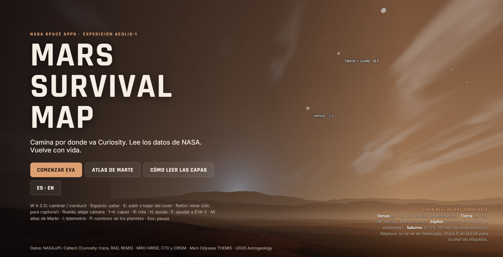
Documentación de la propuesta
Reto: Interplanetary Survival Guide: Martian Map
Equipo Pimpollos · Raúl Valverde · Erick Arana · Andres Mejia · Jesser Rodriguez
NASA Space Apps Challenge · Sede Managua 2026 (14–15 de noviembre de 2026)
Reto: Interplanetary Survival Guide: Martian Map · Nivel: Intermediate · Temas: Human Exploration, Mars, Planets & Moons, Software, Space Exploration
Equipo: Pimpollos · Versión del documento: cierre del Día 1 (sábado 14 de noviembre de 2026, 11:59 p. m.), basada en el commit efd3576 del repositorio
Nota de nombre. Marsift es el nombre oficial de la propuesta. En el código y en la interfaz actual el proyecto todavía aparece con su nombre de trabajo, "Mars Survival Map" (carpeta
mars-survival-map/, título de la página ypackage.json). Cambiar ese título en la interfaz es una de las tareas del domingo (ver apartado 7.3).
| Campo | Valor |
|---|---|
| Nombre de la propuesta | Marsift |
| Nombre del equipo | Pimpollos |
| Integrantes | Raúl Valverde, Erick Arana, Andres Mejia, Jesser Rodriguez |
| Reto oficial elegido | Interplanetary Survival Guide: Martian Map |
| Sede y fecha | NASA Space Apps Challenge Managua 2026 (14–15 de noviembre de 2026) |
Identificación de la solución. Marsift es un mapa táctico 3D, web e interactivo, para planificar y ejecutar una caminata marciana (Marswalk) en una zona de 6,1 × 6,1 km de la ladera norte del Monte Sharp (cráter Gale), la misma que recorre el rover Curiosity. Reúne en una sola cuadrícula de 6 m/píxel el relieve de alta resolución (DTM de HiRISE y CTX), la mineralogía (CRISM), la inercia térmica (THEMIS), la radiación y la temperatura medidas en superficie (RAD y REMS) y la traza real del rover. Con esos datos estima por dónde se puede caminar, cuánto oxígeno, energía y dosis cuesta cada ruta para un astronauta concreto, y dónde refugiarse. La interfaz funciona como un HUD de casco en primera/tercera persona, con un modo de planificación previo a la salida y un atlas de todo Marte. Corre en el navegador sin instalación.
Qué desarrollamos. Un simulador y planificador de EVA en el navegador (Three.js + Vite) alimentado por un pipeline de datos reproducible en Python y Node.js. El pipeline descarga solo la ventana necesaria de productos públicos de NASA/USGS/PDS, los alinea con las elevaciones que midió Curiosity y genera las capas que usa el mapa 3D.
Qué problema aborda. Los mapas de Marte que existen hoy son globales o regionales y están pensados para orbitadores y rovers. Un astronauta a pie necesita saber a escala de metros qué pendientes no puede subir con el traje, dónde hay campos de bloques, qué tan frío está el suelo, dónde está más protegido de la radiación, hasta dónde le alcanza el oxígeno y dónde está el refugio más cercano si llega una tormenta solar.
Cómo responde al reto.
Principal resultado técnico logrado. Un terreno 3D real cuyo modelo de elevación, comparado con 857 paradas de Curiosity, tiene una diferencia mediana de 0,1 m y una dispersión robusta (MAD) de 2,2 m. Sobre él funciona una campaña jugable de 5 misiones que una prueba automática completó de principio a fin con 4 perfiles de astronauta (apartado 6).
La NASA explora Marte con robots desde hace décadas. Sus datos son públicos, pero están repartidos en productos distintos (modelos de elevación, imágenes, espectros, mediciones de superficie), cada uno con su proyección, su resolución y su formato. Herramientas como JPL Mars Trek o los mapas del USGS-NASA Planetary Geologic Mapping Program sirven para la vista global o regional. Ninguna está organizada para responder las preguntas tácticas de una persona que va a caminar 7 km con un traje presurizado:
Tras el sobrevuelo lunar de Artemis II y la planificación de una base lunar, la siguiente frontera son las caminatas en Marte. Con un retraso de comunicación con la Tierra de varios minutos (14 min en la narrativa del juego), la tripulación tendrá que decidir sola, con datos, en el lugar.
¿Se pueden integrar productos orbitales y mediciones de superficie de la NASA en un solo mapa a escala de metros, validado contra datos de un rover, que traduzca cada capa en una consecuencia concreta para la seguridad y la productividad científica de un astronauta?
Construir un mapa táctico interactivo de una zona real de Marte que integre al menos tres tipos de datos de NASA y que permita planificar, ensayar y ejecutar una caminata segura y científicamente productiva.
| # | Objetivo específico | Estado |
|---|---|---|
| O1 | Elegir una zona con objetivos científicos confirmados y recortarla en una cuadrícula común | ✅ Hecho: 6,144 km de lado, 1024×1024 px a 6 m/px, centrada en 4,770° S, 137,395° E |
| O2 | Construir un modelo de elevación preciso y validarlo contra mediciones de superficie | ✅ Hecho: CTX + 3 DTM de HiRISE, validado con 857 paradas de Curiosity |
| O3 | Integrar 3 o más capas de datos y documentar el método de cada una | ✅ Hecho: 7 tipos de dato (tabla 6.2) |
| O4 | Traducir cada capa en reglas de seguridad y consumo de recursos con umbrales justificados | ✅ Hecho: rules.json + docs/reglas.md |
| O5 | Calcular rutas seguras y estimar su costo antes de salir | ✅ Hecho: A* + vista de planificación de la EVA |
| O6 | Modelar al astronauta (masa, estatura, edad, VO₂max, traje) | ✅ Hecho: modelo de Pandolf adaptado a 0,379 g |
| O7 | Dar contexto visual en primera persona y contexto global | ✅ Hecho: fotos Navcam reales por objetivo y atlas MOLA de todo Marte |
| O8 | Integrar clima espacial en tiempo real | ⚠️ Parcial: código hecho con NASA DONKI; en la prueba del sábado la clave pública DEMO_KEY respondió HTTP 429 y no hay copia guardada en el repositorio, así que se usó el evento de referencia de mayo de 2024 |
| O9 | Validar la usabilidad con personas ajenas al equipo | ⏳ Pendiente: el protocolo está escrito (docs/pruebas_usabilidad.md), la tabla de resultados está vacía |
Marsift sigue el ciclo de una EVA real: perfil → planificación → ejecución → registro.
src/ui/profile.js): antes de salir se elige masa, estatura, edad, sexo, VO₂max y traje (traje marciano ligero de 50 kg, Apollo A7LB + PLSS de 91 kg o xEMU de ~145 kg). La pantalla calcula peso en Marte, metabolismo basal, velocidad máxima de marcha (número de Froude), frecuencia cardíaca y autonomía de O₂.src/ui/planner.js, src/gameplay/planner.js): compara cuatro rutas (A*, línea recta, con escala en un refugio y una propia, con puntos de paso que el usuario marca en el mapa y que se enlazan con A*), con perfil de elevación, distancia, desnivel, pendiente máxima, metros bloqueados, rocosos o con riesgo de resbalar, y estimación de O₂ mínimo, batería, integridad, fatiga y dosis. Cada ruta recibe un veredicto: ok, risky, fail o blocked.src/ui/hud.js): terreno 3D, barras de O₂, energía e integridad del traje, minimapa con la traza de Curiosity, brújula, capas 1–4 (pendiente, radiación, temperatura, minerales) dibujadas sobre el terreno, ruta sugerida (R), telemetría NAV/BIO (I) y alertas.src/ui/atlas.js, tecla M): atlas de Marte en tres niveles (global, Gale y zona EVA), traza propia exportable a CSV, regla de distancias y perfiles de elevación.El sistema tiene dos partes que se comunican solo por archivos. Así el mapa funciona sin servidor propio y se puede publicar como sitio estático (GitHub Pages o Netlify, vite.config.js con base: "./").
A. Pipeline de datos (fuera de línea) — mars-survival-map/data/scripts/
| Script | Función |
|---|---|
fetch_nasa.py |
Consulta el catálogo STAC de USGS Astrogeology y la API ODE del PDS; descarga solo la ventana del recorte (≈23–32 MB) de los DTM, ortoimagen CTX, THEMIS y CRISM; guarda la procedencia en data/raw/manifest.json |
real_data.py, layers_lib.py, region.py |
Reproyección a la cuadrícula común, alineación vertical con Curiosity, fusión HiRISE/CTX, pendiente, rugosidad, cielo visible, modelos de radiación y temperatura, clasificación CRISM, mapa de costos |
build_layers.py |
Genera public/layers/ (DEM de 16 bits, capas PNG, grid.bin, cost.png), data/processed/report.json (estadísticas, validación y alcanzabilidad de objetivos) y una vista previa |
build_textures.py |
Texturas HD: ortoimágenes HiRISE (1 m/px) igualadas a CTX, normales y oclusión ambiental del DTM |
build_atlas.mjs |
Descarga MOLA MEGDR por HTTP Range; genera public/atlas/ (MOLA global y Gale comprimidos, traza y perforaciones de Curiosity) |
build_structures.mjs |
Coloca las estructuras de la base según las capas (terreno llano, puntos altos, perforaciones reales) |
fetch_donki.mjs |
Guarda una copia de NASA DONKI para usar sin red |
synthetic.py |
Terreno sintético alternativo (respaldo de desarrollo) |
B. Aplicación web (en el navegador) — mars-survival-map/src/ (~6 500 líneas de JavaScript)
| Módulo | Función |
|---|---|
data.js, engine/world.js |
Carga las capas y consulta altura, pendiente, radiación, temperatura, mineral y rugosidad en cualquier punto |
engine/scene.js |
Malla 3D de 768×768 vértices desde el DEM real, shader que superpone las capas y texturas HiRISE, cielo, rocas, marcadores y ruta |
engine/physics.js, engine/controls.js, engine/astronaut.js |
Gravedad de Marte (3,721 m/s²), colisiones, controles y astronauta |
engine/physiology.js |
Gasto metabólico (Pandolf adaptado), VO₂, O₂, CO₂, frecuencia cardíaca, fatiga, carga del equipo y muestras |
engine/marsrover.js, engine/props.js, engine/structures.js |
Rover conducible de 6 ruedas con rocker-bogie que sigue el terreno, hábitat, refugios e infraestructura de la base |
gameplay/game.js, gameplay/alerts.js |
Reglas de rules.json: recursos, escaneo, tormenta solar, refugios, puntaje y 21 alertas |
gameplay/pathfinding.js |
A* sobre una cuadrícula de 512×512 (celdas de 12 m) con regla estricta de bloqueo |
gameplay/planner.js, ui/planner.js |
Estimación de rutas antes de salir |
gameplay/companion.js |
EVA-2, el compañero de caminata |
spaceweather.js |
Pronóstico de clima espacial desde NASA DONKI |
marsclock.js, engine/planets.js |
Hora local en Gale, Ls, sol de Curiosity, distancia y retraso Tierra–Marte; planetas en el cielo |
geo.js |
Lat/lon ↔ mundo 3D, distancias de círculo máximo, presión y estado del agua |
ui/*.js, i18n.js |
HUD, atlas, perfil, pantallas de carga y pausa; todo en español e inglés |
docs/reglas.md.grid.bin, dem.bin, MOLA en un formato propio .z que se descomprime con DecompressionStream), una sola dependencia de ejecución (three@0.180.0) y publicación estática.region.json y usado por el pipeline y el motor.report.json.El equipo se organizó en cuatro roles con contratos de archivos entre ellos (mars-survival-map/README.md, sección "Contratos entre miembros"):
| Rol | Responsabilidad |
|---|---|
| M1 | Terreno y modelos 3D |
| M2 | Motor web (Three.js), HUD, física y jugabilidad |
| M3 | Datos: recorte, descarga, capas, reglas, objetivos y validación |
| M4 | Historia, misiones, diálogos, wireframes del HUD, guion del video y pruebas de usabilidad |
El desarrollo tuvo 11 commits entre las 11:50 a. m. y las 7:23 p. m. del sábado 14 de noviembre. Pasos metodológicos:
docs/wireframes/index.html) y un sistema visual con código de peligro que no depende solo del color: liso = seguro, puntos = precaución, rayas = peligro (docs/sistema_visual.md).report.json), incluida la comprobación de que todos los objetivos son alcanzables desde el hábitat.rules.json) que el motor implementa sin cambios.docs/prueba_completa.md).| # | Recurso | Misión / instrumento | Tipo de dato | Uso en Marsift | Acceso |
|---|---|---|---|---|---|
| 1 | DTM CTX controlado, ajustado al geoide (T01_000815_1749_XN_05S222W__P21_009149_1752_XI_04S222W) |
MRO / CTX | Topográfico (20 m) | Relieve base (100 % del recorte) | USGS Astrogeology ARD (STAC) |
| 2 | Ortoimagen CTX del mismo par | MRO / CTX | Óptico (20 m) | Textura base y relleno | USGS Astrogeology ARD |
| 3 | 3 DTM HiRISE SOCET SET (DTEEC_009149_1750_009294_1750_U01, DTEEC_019698_1750_019988_1750_U01, DTEEC_009650_1755_009716_1755_U01) |
MRO / HiRISE | Topográfico (1 m, leído a 3 m) | Detalle del relieve (cobertura 81 %, 55 % y 28 %), pendiente y rugosidad | USGS Astrogeology ARD (STAC) |
| 4 | Ortoimágenes HiRISE RED de esos pares (PSP_009149_1750, ESP_019698_1750, PSP_009650_1755) |
MRO / HiRISE | Óptico (1 m) | Textura HD del suelo (4096², 1,5 m/px) | USGS Astrogeology |
| 5 | 7 productos CRISM MTRDR (FRT000058A3, FRT0000B6F1, HRL0000BABA, FRT00021C92, FRT0001BBA1, FRT0001CA91, FRT0000C518) | MRO / CRISM | Espectral (18 m) | Mapa de minerales: arcillas, sulfatos, arena basáltica | PDS Geosciences Node (API ODE) |
| 6 | Mosaico cuantitativo de inercia térmica THEMIS 30S120E | Mars Odyssey / THEMIS | Térmico (100 m) | Temperatura del suelo según tipo de terreno | USGS Astropedia (USGS/ASU) |
| 7 | MSL waypoints (posición y elevación por sol) | MSL / Curiosity | Trayectoria de rover | Validación del DEM, ubicación de objetivos, traza en minimapa y atlas (857 paradas en el recorte, 1 389 en total) | NASA/JPL MMGIS (datos del Curiosity Route Map) |
| 8 | Dosis en superficie de RAD (0,21 ± 0,04 mGy/día) | MSL / RAD | Radiación | Dosis base del modelo de radiación | Hassler et al. (2014) |
| 9 | Rango diario de temperatura del suelo | MSL / REMS | Atmosférico / térmico | Calibración del modelo de temperatura | NASA/JPL MSL; PDS Atmospheres Node |
| 10 | MOLA MEGDR megt90n000eb (16 px/°) y megt00n000gb (64 px/°) |
MGS / MOLA | Topográfico global | Atlas global y de Gale; presión superficial estimada | PDS Geosciences Node |
| 11 | Imágenes crudas Navcam (9 imágenes, soles 2481–4558) | MSL / Navcam | Óptico en superficie (POV) | Lo que verá el astronauta al llegar a cada objetivo | NASA/JPL MSL Raw Images |
| 12 | DONKI: fulguraciones (FLR), eventos de partículas (SEP) y simulaciones WSA-Enlil | CCMC / NASA GSFC | Clima espacial | Nivel de riesgo de radiación y aviso de tormenta | api.nasa.gov |
| 13 | Evento solar del 20 de mayo de 2024 (8 100 µGy medidos por RAD) | MSL / RAD, MAVEN | Radiación | Evento de referencia sin conexión | Comunicado NASA/JPL (jun. 2024) |
| 14 | Gazetteer of Planetary Nomenclature | IAU / USGS | Geográfico | 40 rasgos del atlas (cráteres, volcanes, cañones, misiones) | planetarynames.wr.usgs.gov |
| 15 | Mars Fact Sheet; elementos orbitales aproximados (Standish); algoritmo Mars24 (Allison y McEwen 2000) | NASA GSFC, JPL, NASA GISS | Constantes y efemérides | Gravedad, presión, hora local en Gale, Ls, distancia Tierra–Marte, planetas en el cielo | NASA |
Recursos sugeridos por el reto: qué usamos y qué no.
| Recurso sugerido | ¿Se usa en el repositorio? |
|---|---|
| JPL Mars Trek | No directamente. Usamos los mismos productos de origen (MOLA, CTX, HiRISE) descargados de USGS y PDS. |
| USGS-NASA Planetary Geologic Mapping Program | No directamente. Usamos otros servicios de USGS Astrogeology (STAC ARD, Astropedia, Gazetteer). Las unidades geológicas del recorte salen de CRISM y de la estratigrafía de Curiosity. Integrar los mapas geológicos del programa está en la hoja de ruta. |
| Curiosity Rover Mount Sharp Route Map | Sí. Usamos la traza oficial de JPL MMGIS (MSL_waypoints.json). |
| NASA Worldview | No. |
| Mars Perseverance Raw Images | No. Usamos las imágenes crudas de Curiosity (MSL), que corresponden a nuestra zona. |
Otras agencias. No se usan datasets de otras agencias. El texto del evento de referencia de mayo de 2024 menciona la estimación X12 de la fulguración hecha con Solar Orbiter (ESA/NASA), tal como la reportó la NASA.
dosis = 8,75 µGy/h (RAD) × (0,25 + 0,75 × cielo visible) × (1 + 1 % por cada 100 m de altura). Las diferencias reales son de pocos por ciento. Durante una tormenta solar la dosis se multiplica ×40 y los refugios la reducen al 5 %.P = 610 Pa · e^(−h/11,1 km) desde la elevación MOLA o del DEM, columna de aire y estado del agua (líquida solo si P > 611,7 Pa).cost.png (0 = intransitable), que usa el A*.rules.json, por segundo real, con el tiempo comprimido ×14):
rules.json (misión 2), no DONKI.| Capa (tecla) | Tipo de dato | Fuente | Resolución en el mapa | Regla derivada | Umbrales |
|---|---|---|---|---|---|
| Pendiente (1) | Topográfico | DTM CTX + HiRISE | 6 m | Velocidad y O₂; desgaste del traje; bloqueo | seguro < 12° · resbalón 18–25° · bloqueado > 25° |
| Rugosidad (dibujada en la 1) | Topográfico derivado | DTM HiRISE (3 m) | 6 m | Coeficiente de terreno y bloques que no se pueden pisar | rocoso > 0,6 m · campo de bloques > 0,9 m |
| Radiación (2) | Radiación | RAD + cielo visible + altura | 6 m | Pérdida de integridad del traje; ×40 en tormenta | seguro < 8,3 · peligro > 8,7 µGy/h |
| Temperatura (3) | Térmico | REMS + THEMIS + orientación | 6 m (THEMIS de 100 m remuestreado) | Consumo de batería | seguro > −25 °C · peligro < −45 °C |
| Minerales (4) | Espectral | CRISM (7 productos) | 6 m (CRISM de 18 m) | Ubicación de objetivos; coeficiente de terreno | clases 0–4 |
| Óptico / textura | Óptico | CTX 20 m + HiRISE 1 m | 1,5 m/px | Contexto visual | — |
| Ruta sugerida (R) | Combinación | cost.png |
12 m (A*) | Camino más seguro, no el más corto | 0 = intransitable |
| Atlas (M) | Topográfico global y atmosférico | MOLA | ~7,4 km y ~925 m | Presión, columna de aire, agua líquida | P > 611,7 Pa |
| Clima espacial | Radiación (heliofísica) | DONKI | — | Nivel de riesgo y texto del aviso | alto, moderado, bajo |
data/processed/report.json)| Indicador | Resultado |
|---|---|
| DEM frente a 857 paradas de Curiosity | mediana +0,1 m, MAD 2,17 m, percentil 95 del error absoluto 10,85 m |
| Pendiente en las paradas de Curiosity | mediana 8,6°, p95 21,2°; solo el 3,4 % cae en celdas que marcamos como bloqueadas |
| Superficie bloqueada (> 25°) | 11,6 % del recorte |
| Área alcanzable desde el hábitat | 86,1 %; los 7 puntos clave son alcanzables |
| Arcillas CRISM en la banda de altura de Glen Torridon | 96,1 % |
| Sulfatos CRISM por encima de −4 078 m (unidad de sulfatos) | 96,7 % |
| Clases minerales en el recorte | arcillas 2,7 % · sulfatos 29,1 % · arena basáltica 4,6 % |
| Inercia térmica THEMIS | 301–528 TIU (mediana 403), coherente con Fergason et al. (2012) |
| Rugosidad | 20,2 % del mapa rocoso y 8,8 % campo de bloques; solo el 12,3 % de las paradas de Curiosity están en terreno rocoso |
| Elevación del recorte | −4 330 m a −3 057 m (~1 270 m de desnivel) |
| Radiación modelada | 4,3–9,4 µGy/h (mediana 8,5) |
| Temperatura del suelo modelada | 10:00 h mediana −25 °C · noche mediana −86 °C |
| MOLA frente a Curiosity en el punto de aterrizaje | −4 505 m frente a −4 501 m |
Nota para la verificación del domingo:
docs/fuentes.mdydocs/reglas.mdcitan una validación anterior (mediana −0,25 m, MAD 2,0 m). Este documento usa los valores dereport.json, el archivo que genera el pipeline. Hay que actualizar esos dos documentos para que coincidan.
| Punto | Tipo | Sol de Curiosity | Pendiente | Clase CRISM | Ciencia |
|---|---|---|---|---|---|
| Hábitat Aeolis | Base / refugio | 2320 | 7,1° | — | Inicio, entrada de Glen Torridon |
| Unidad de arcillas | Objetivo 1 | 2481 | 7,7° | Arcillas | Filosilicatos formados con agua de pH casi neutro (perforación Glen Etive) |
| Rover de apoyo Tumbo | Refugio | 3489 | 17,2° | Sulfatos | Recarga parcial (hasta 60 %) |
| Unidad de sulfatos | Objetivo 2 | 3608 | 6,2° | Sulfatos | Registro del secado del clima (perforación Canaima) |
| Piedras de azufre de Gediz Vallis | Objetivo 3 | 4200 | 7,7° | Sulfatos | Azufre elemental casi puro (2024) |
| Refugio Sur | Refugio / fin | 4558 | 5,5° | Boxwork | Módulo presurizado |
| Formaciones boxwork | Objetivo 4 | 4671 | 9,0° | Boxwork | Agua subterránea que cementó fracturas |
npm run build compila sin errores (Vite 7.1.12; 33 módulos; paquete JS de 807 kB, 234 kB comprimido con gzip).docs/prueba_completa.md): un bot juega con la misma lógica del juego, sigue el A*, escanea, se refugia en la tormenta y rescata a EVA-2.| Perfil | Resultado | Tiempo real | Recargas | Puntos |
|---|---|---|---|---|
| Referencia (75 kg, 175 cm, VO₂max 45) | ✅ 5/5 misiones | 21,9 min | 1 | 1129 |
| 56 kg · 160 cm | ✅ | 23,4 min | 1 | 1079 |
| 92 kg · 190 cm | ✅ | 22,1 min | 1 | 1127 |
| VO₂max 28 | ✅ | 27,8 min | 1 | 1034 |
| Traje Apollo A7LB (91 kg) | ❌ sin O₂ en la misión 4 | 45,4 min | 3 | — |
| Traje xEMU (145 kg) | ❌ sin O₂ en la misión 3 | 27,4 min | 3 | — |
Un hallazgo operacional de esta prueba: la línea recta suele ser intransitable (pendientes > 25°) y la ruta segura es ~18 % más larga.
Capturas tomadas el 14 de noviembre de 2026 en la versión local del commit
efd3576(Chrome, 1540×788). Para llegar rápido a cada situación se usó el modo?debug=1y la consola de depuración del juego (teletransporte, forzar la tormenta); todos los valores, capas, fotos y textos que se ven los calcula y muestra el propio juego.
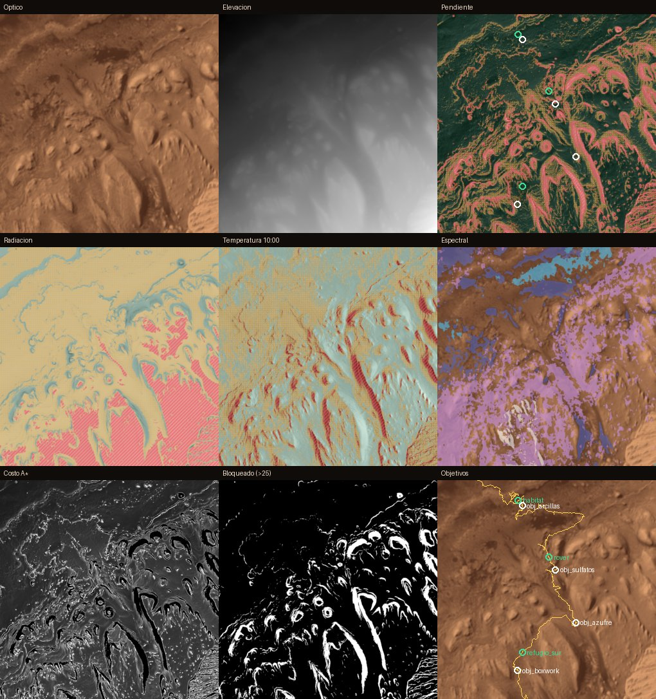
data/processed/preview.png): ortoimagen, DEM, pendiente, radiación, temperatura y minerales del recorte de 6,1 × 6,1 km.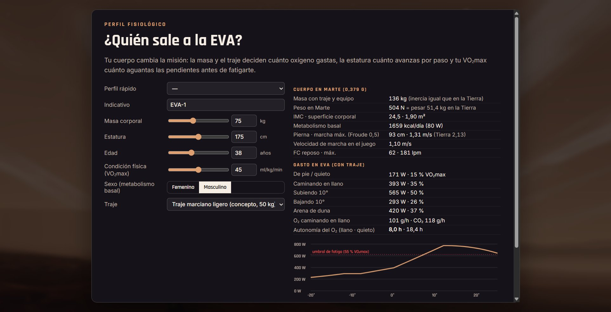
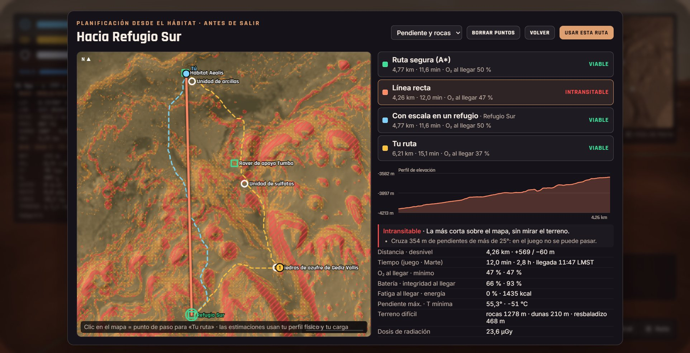
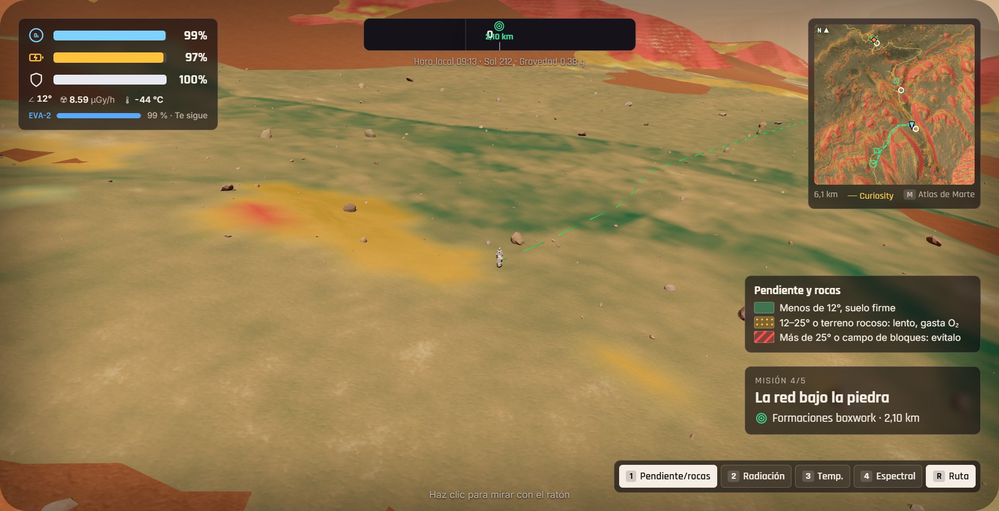
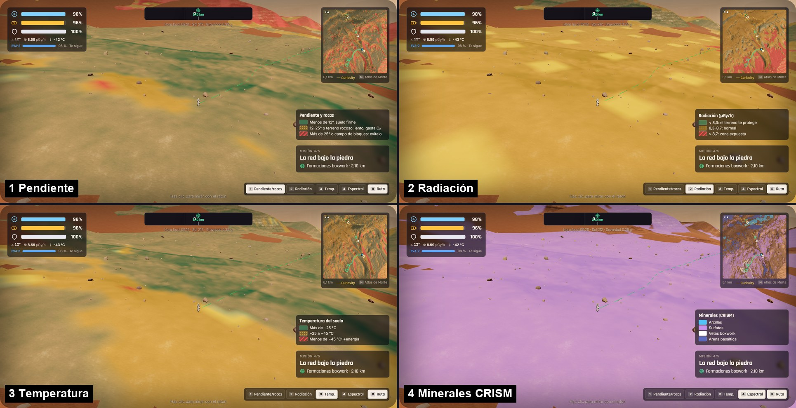
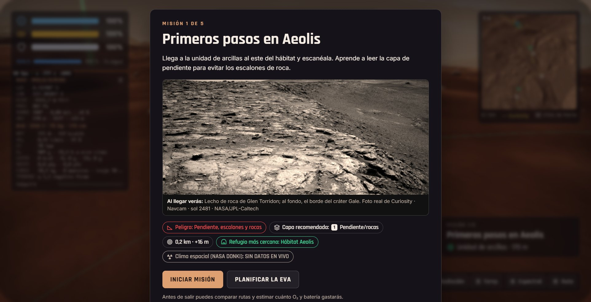
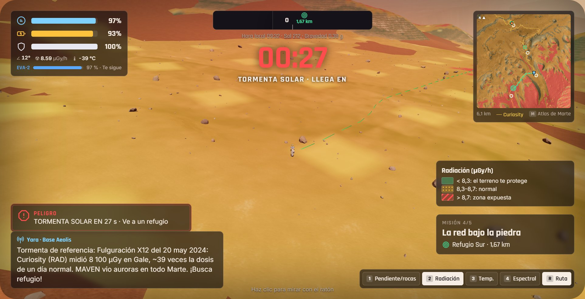
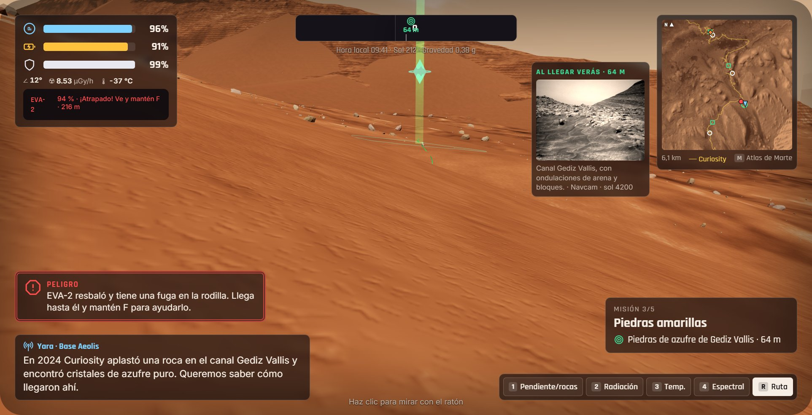
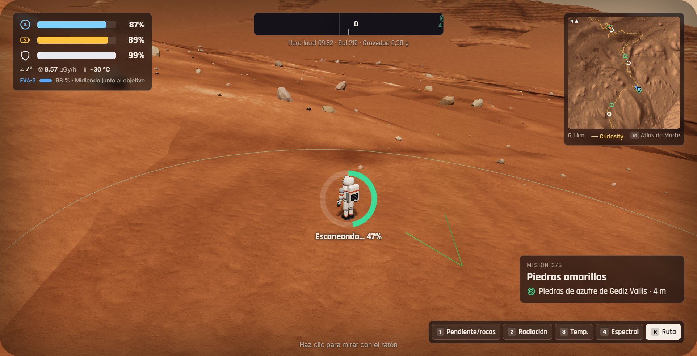
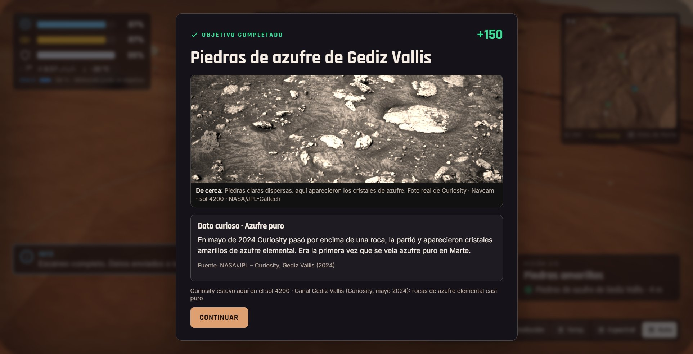
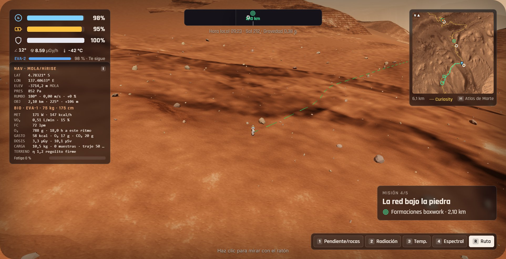
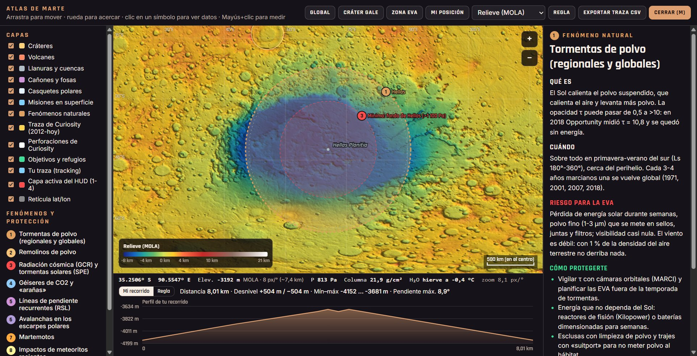
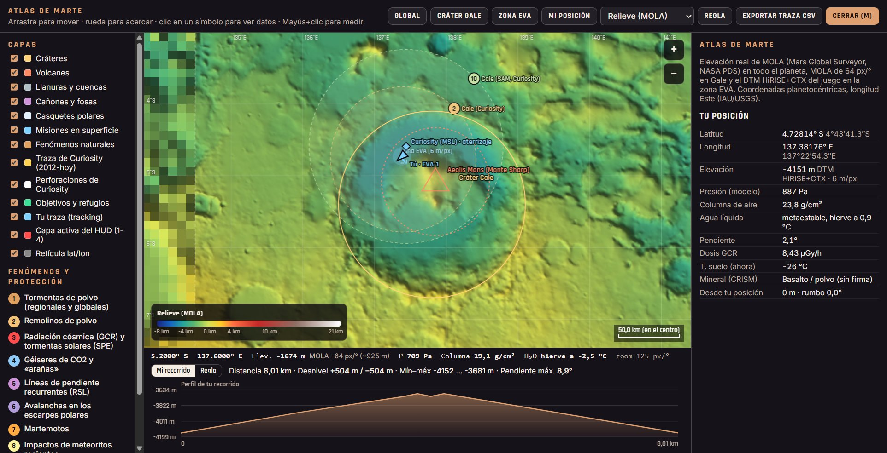
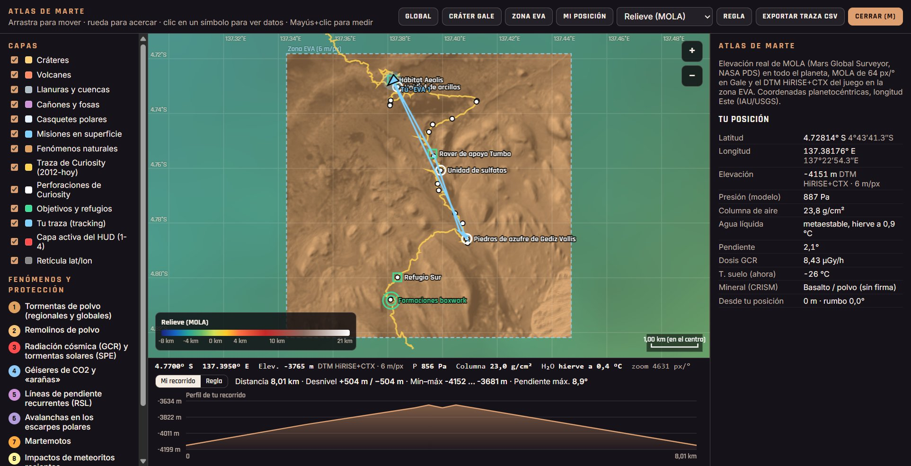
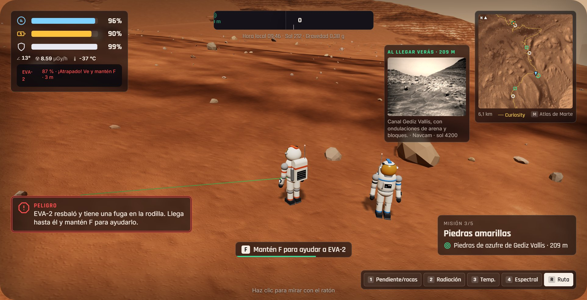
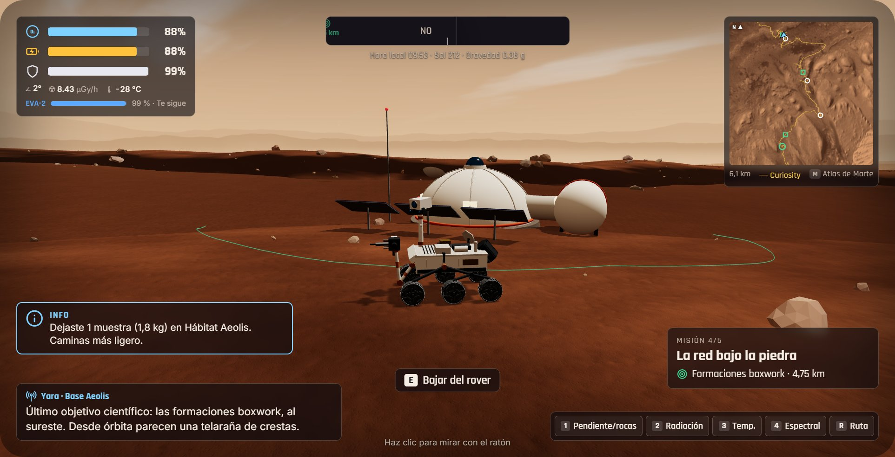
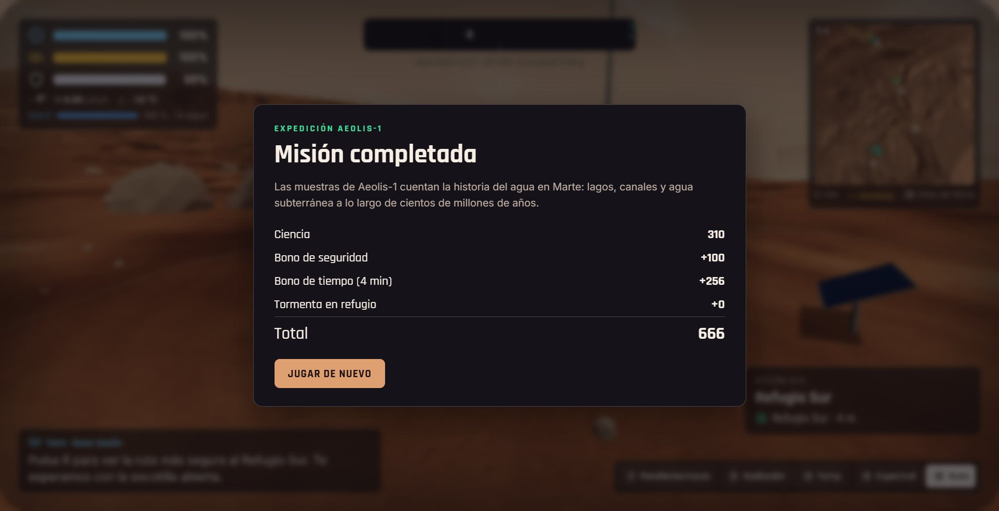
https://github.com/Andresmejia62/Pimpollos; confirmar que sea público]cd mars-survival-map
npm install
npm run dev # http://127.0.0.1:5173 (?debug=1 para FPS y atajos)
npm run build # sitio estático en dist/
Regenerar los datos (requiere Python 3, numpy, Pillow y rasterio):
python3 data/scripts/fetch_nasa.py
python3 data/scripts/build_layers.py
python3 data/scripts/build_textures.py
node data/scripts/build_atlas.mjs
NASA_API_KEY=<clave> node data/scripts/fetch_donki.mjs
Directos
Indirectos
region.json; con los mismos scripts se puede generar otra zona de Marte que tenga cobertura de HiRISE, CTX y CRISM.Límites actuales (alcance honesto). Es un prototipo de hackathon, no una herramienta certificada:
Domingo 15 de noviembre por la mañana (Bloques 05 y 06)
index.html, pantalla de inicio y créditos).fetch_donki.mjs → public/spaceweather/donki.json), o configurar VITE_NASA_API_KEY en el despliegue, para que el clima espacial muestre datos reales.docs/fuentes.md y docs/reglas.md con report.json.docs/pruebas_usabilidad.md) si hay tiempo, tomar las capturas del apartado 6.6 y grabar el video de 30 s en inglés.Después del hackathon
docs/fisiologia.md).| Capa | Tecnologías |
|---|---|
| Lenguajes | JavaScript (ES2022, módulos ES), Python 3, HTML5, CSS3, GLSL (shaders de Three.js) |
| Visualización 3D | Three.js 0.180.0 (WebGL) |
| Build y servidor de desarrollo | Vite 7.1.12, Node.js, npm |
| Procesamiento geoespacial | rasterio / GDAL (GeoTIFF optimizados para la nube, ventanas y reproyección), NumPy, Pillow |
| Protocolos de datos | STAC API, PDS ODE REST, HTTP Range (MOLA), REST (api.nasa.gov) |
| APIs del navegador | WebGL, DecompressionStream, Fetch, Web Audio, localStorage (caché de DONKI) |
| Diseño y documentación | Wireframes HTML interactivos, Markdown, Mermaid, Obsidian (notas), IDE de JetBrains (.idea) |
| Control de versiones | Git y GitHub |
| Publicación prevista | Sitio estático (GitHub Pages o Netlify) |
El equipo Pimpollos declara que usó herramientas de inteligencia artificial durante el desarrollo de Marsift y la preparación de esta documentación:
El equipo revisó, corrigió y validó todo el contenido generado con ayuda de IA. Las cifras de este documento se tomaron de los archivos que genera el pipeline (data/processed/report.json, data/raw/manifest.json) y de la documentación técnica del repositorio. Las imágenes, texturas y modelos de elevación del proyecto son datos reales de la NASA y del USGS, no imágenes generadas por IA.